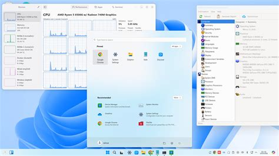

With the opportunities and risks in mind, European public sectors have plenty of choices about the adoption of Linux. The most important benefits of switching to Linux are sovereignty, national security, and long-term money saved on contracts. The primary issues are the time, money, and training needed to switch operating systems effectively. The long-term benefits clearly outweigh the short-term issues. Therefore, the question to focus on is how to proceed with the adoption of Linux in the European Union.
The short-term issues of money and time while very impactful, are also very simple. Working with the companies behind certain Linux distributions like canonical and red hat would reduce development time and costs. There are not many ways to reduce the initial costs of switching. However, when one governing sector spends the resources switch, other governments can simply work with and copy them. The initial costs for the governments on the frontier may be high, but as European Union governments work together the initial costs to adopt Linux will diminish. This is uniquely possible in the European Union, because it’s a union of mostly friendly countries with common values. The money saved on contracts over time could even be donated to the open-source software in the Linux ecosystem to promote the development of better and more government suitable applications.
The most complicated issue, as seen in the Munich Linux project, is getting employees on board. While a lot of time will inevitably go to development, likely proper employee management will take even more time. The easiest way to get employees happy with the Linux ecosystem is to minimize the differences. Where possible, limiting their access to non-secure closed software while still on windows will keep their complaints limited to the IT team instead of Linux itself while also furthering security before even needing to switch. Many tools associated with the Linux ecosystem like libre office are downloadable on Windows. Getting employees used to these tools before switching will comfort them. Switching everything at once is overwhelming in comparison.
Another way to minimize differences is to make Linux more like Windows. Linux is very customizable with several mainstream distributions with different looks and feels. Designing a work distribution to have a similar look and feel to Windows will make employees feel at home when switching. A perfect recreation is both legally questionable and time consuming to produce, but user environments have come close as seen in Figure 2. Minimizing the differences will keep employees happy, therefor keeping the reputation of Linux high. Keeping the reputation high reduces the risk of another Munich situation happening, which would mean transitioning back to windows.
Linux distribution known as Winux

Winux. (2026). Winux news. https://www.winux.is/news/
To strengthen security in Linux, there are several solutions. Whether it be through a company or doing it themselves, regular security audits are necessary. Unlike in Windows, the European Union is not dependant on a company to manage parts of their security. However, they are free to contract companies like Canonical and Red Hat if they wish to continue to outsource their security. The difference being that anytime the European Union wishes, they can double check the work of those companies unlike Microsoft. Other security options that should be used alongside audits include bug bounties, good security policies, and potentially antivirus.
Lastly, Linux should start being taught in the primary schools of countries in the European Union. Wider spread adoption of Linux would no doubt increase productivity of the government employees using Linux in their work. The European Union aims to protect the freedoms and rights of its citizens (Manners 2008). Linux gives the users the freedoms to do what they want with their computers. Microsoft in comparison is known to harvest the data of Its users and sell it to third parties (Barik 2016). The European Union furthers its goals when promoting widespread Linux adoption through learning by protecting its citizens right to privacy and giving the citizens more freedom.
Made 19 October 2026